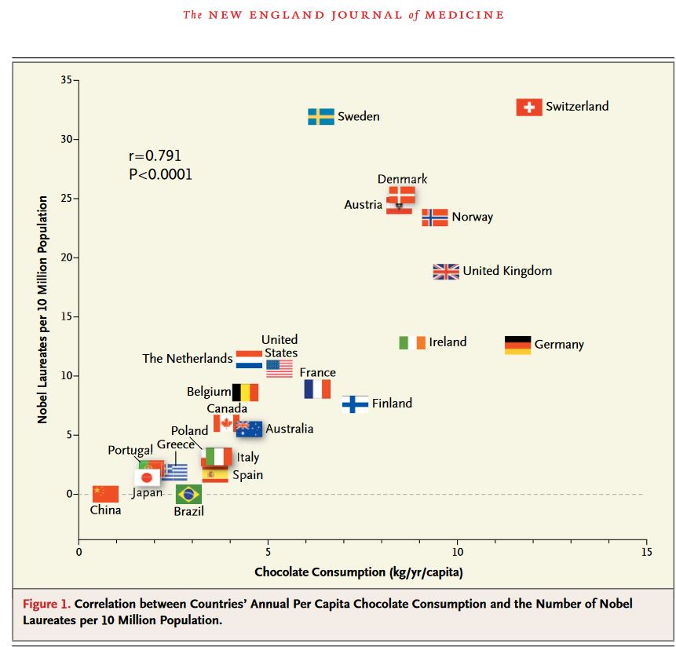
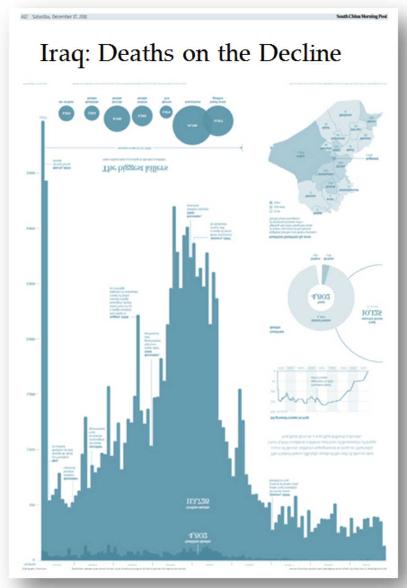
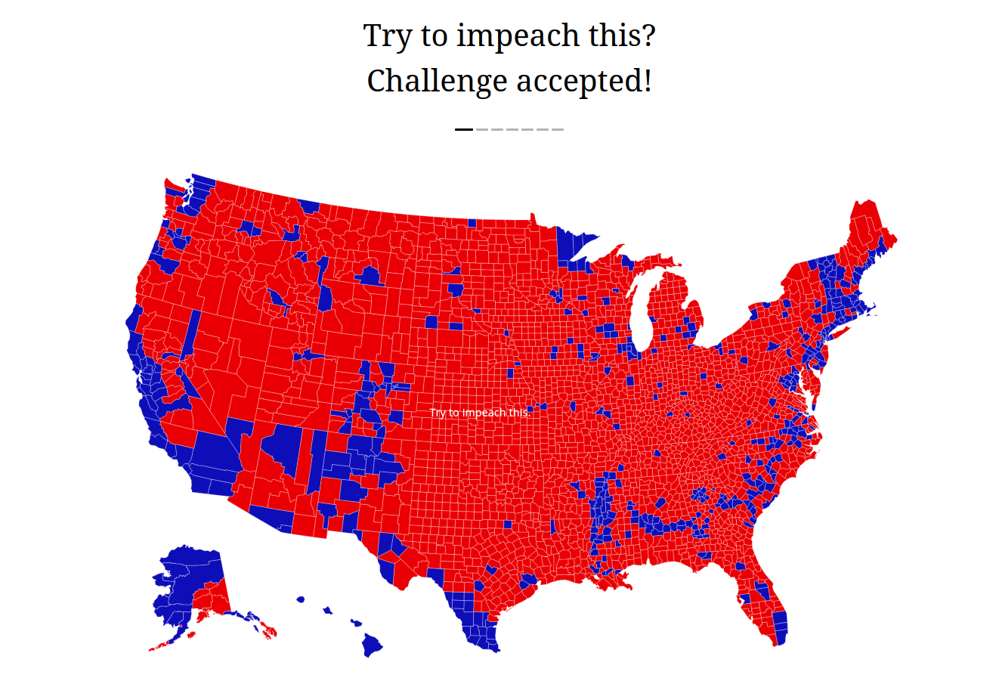
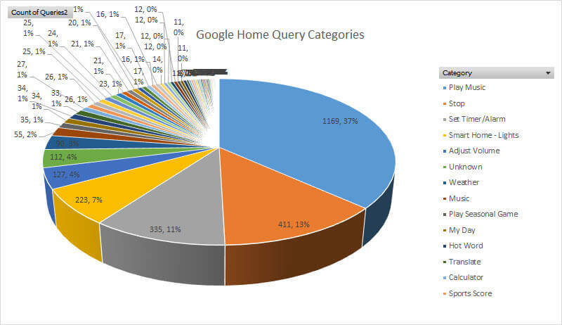
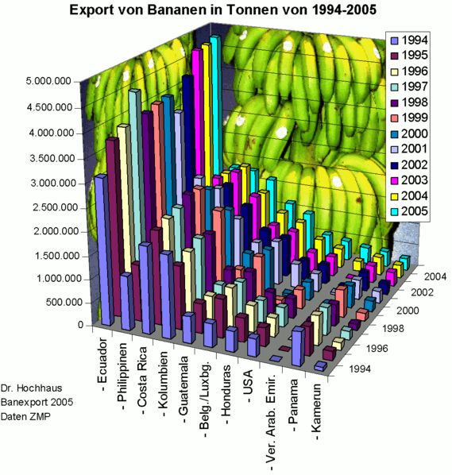

Visualisation de données
10. Dos and dont's en visualisation de données
Noemi Romano
noemi.romano@heig-vd.ch
Ne pas couper les axes
Couper les axes
Comparer des pommes avec des poires
Correlation et causalité
Correlation et causalité

Source: Dos and don’ts of data visualisation — European Environment Agency (eea.europa.eu)
Passer le bon message

Source: Iraq’s casualties - Simon Scarr, South China Morning Post, 2011
Passer le bon message
Source: Iraq: Deaths on the Decline - Andy Cotgreave, 2014
Rapporter à la population
Source: Try to impeach this — Karim Douieb, 2019
Doser l'information
Utiliser la 3D avec précaution
Cumulation trompeuse

Source: Cumulative iPad sales chart provided by Apple, 2013
Utiliser les bonnes couleurs
8% de la population masculine est daltonienne (1/12)

Source: Dos and don’ts of data visualisation — European Environment Agency (eea.europa.eu)
Tourner les diagrammes en bâtons

Source: Dos and don’ts of data visualisation — European Environment Agency (eea.europa.eu)
Ordonner les données

Source: Dos and don’ts of data visualisation — European Environment Agency (eea.europa.eu)
Exercice
Web scraping en pratique (rendu déplacé au 6 mai)
Projet
Rendu déplacé au 16 mai
Présentations mercredi 11- vendredi 13 mai
Calendrier ici